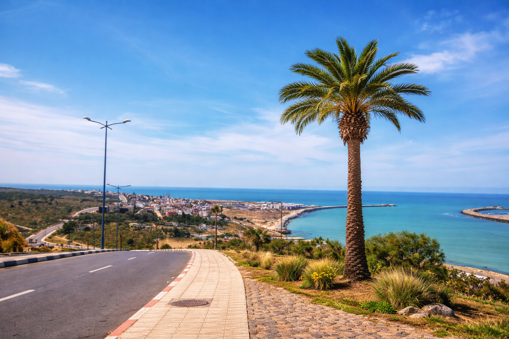
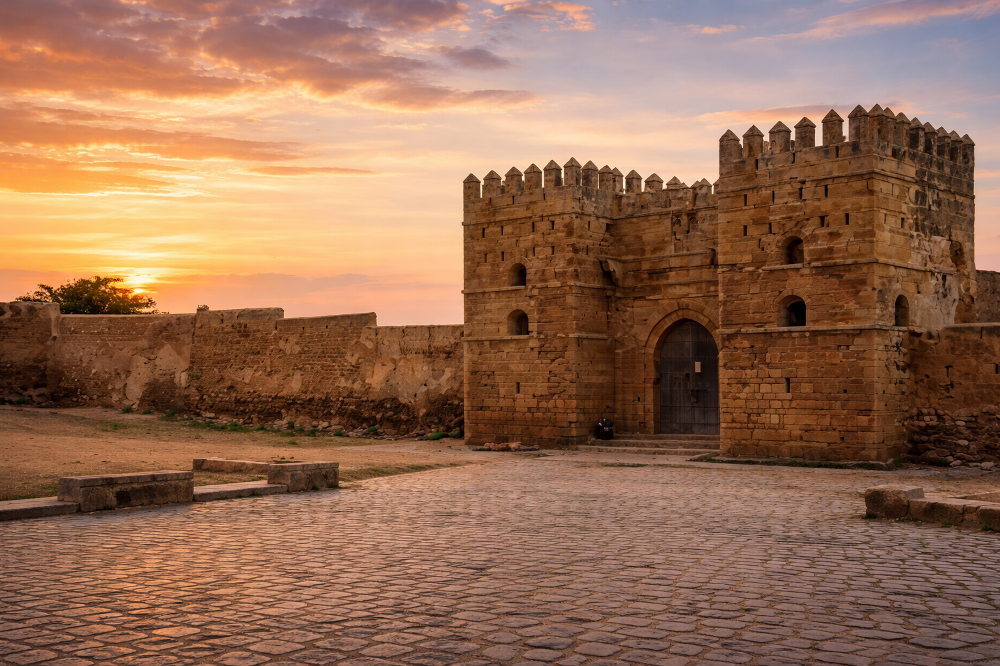
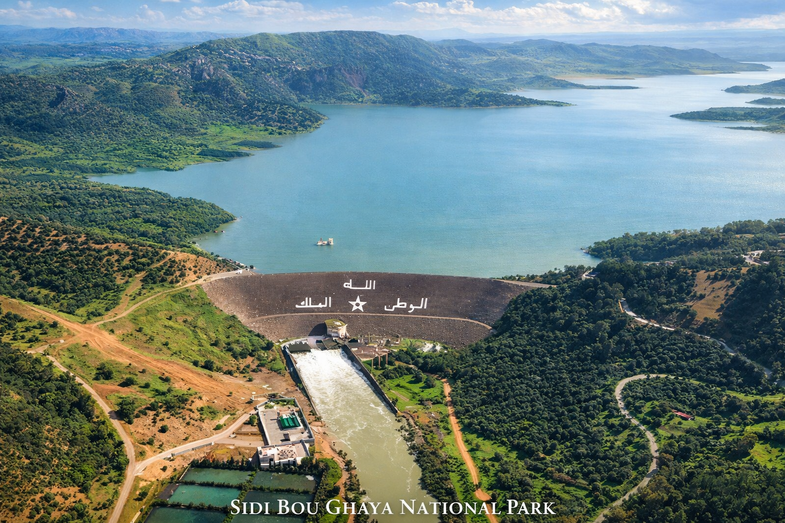

عملية شراء منظمة
تتم عمليات شراء العقارات من خلال عملية توثيق رسمية، مع تسجيل الملكية عبر نظام التحفيظ العقاري.
لماذا القنيطرة · الرباط - سلا - القنيطرة
نظرة واقعية على منطقة الرباط وسلا والقنيطرة — البنية التحتية، الصناعة، التكلفة والساحل. القنيطرة هي مدينة متصلة، لكنها لا تنال حقها في الترويج العقاري، رغم أن أساسياتها أقوى بكثير من صورتها الحالية.
فجوة السوق
الأسواق العقارية الأكثر شهرة في المغرب — مراكش، أكادير، الدار البيضاء، طنجة — تتمتع بوكالات أكثر وضوحاً، وعروض مصقولة، ومسار مألوف للمشترين الأجانب ومغاربة العالم.
لكن منطقة الرباط وسلا والقنيطرة مختلفة. تتمتع المنطقة بثقل اقتصادي، وخطوط نقل، ونشاط صناعي، وطلب من القطاع العام، واحتياجات سكنية متزايدة — ولكن السوق العقاري يظل أقل تنظيماً ويصعب قراءته.
هذه الفجوة هي الفرصة الحقيقية. القنيطرة ليست قصة خيالية أو بطاقة بريدية فاخرة، بل هي مدينة عملية ومنتجة حيث الأساسيات أقوى من طريقة عرضها.
القاعدة الوطنية
تبدأ قصة المنطقة من المسار الأوسع للمغرب: الاستثمار في البنية التحتية، الاستقرار السياسي، الإجراءات العقارية المنظمة، نمو السياحة، التوسع الصناعي، والاهتمام المتزايد من المشترين المحليين ومغاربة العالم والدوليين.
تتم عمليات شراء العقارات من خلال عملية توثيق رسمية، مع تسجيل الملكية عبر نظام التحفيظ العقاري.
الاستثمارات في السكك الحديدية والطرق السيارة والمطارات والتطوير الحضري تواصل إعادة تشكيل المحاور الرئيسية في المغرب.
التصنيع والخدمات اللوجستية والخدمات تخلق طلباً يومياً على السكن يتجاوز السياحة والدورات الموسمية.
تواصل العائلات المغربية في الخارج البحث عن منازل ثانية وقواعد للعودة واستثمارات إيجارية عندما تكون العملية واضحة.
يبحث المشترون الدوليون عن وجهات تتجاوز المدن المشبعة، خاصة عندما يتم شرح المسائل القانونية والمصرفية بشكل صحيح.
يمكن للمدن الثانوية المتصلة أن توفر أسعار دخول أفضل، ومساحات أكبر، ومنافسة أقل من الأسواق الناضجة والظاهرة بوضوح.
الاستثمار العقاري في القنيطرة
تعتمد حالة القنيطرة على أساسيات عملية: الوظائف، النقل، القدرة على تحمل التكاليف، الطلب في وسط المدينة، الوصول إلى الساحل، وسوق لا تزال أقل ازدحاماً من الوجهات العقارية الأكثر شهرة في المغرب.
يخلق النظام الصناعي في القنيطرة طلباً على السكن مرتبطاً بالأشخاص الذين يعيشون ويعملون ويبنون حياتهم في المدينة.
يجعل قطار البراق فائق السرعة القنيطرة جزءاً من محور العاصمة، وليست مجرد سوق ثانوي معزول.
غالباً ما تكون المشاريع الجيدة في المنطقة أقل وضوحاً مما ينبغي — فجوة معلومات للمشترين وفجوة تسويقية للمطورين.
يمكن للشقق ذات الموقع الجيد أن توفر معادلة قيمة يصعب العثور عليها في الرباط أو الدار البيضاء أو الأسواق الساحلية الأكثر نضجاً.
تمنح مهدية وسيدي بوغابة والساحل الأطلسي القنيطرة بعداً ترفيهياً يدعم قصة المدينة.
السوق مدعوم من قبل المقيمين والعمال والعائلات والطلاب والمهنيين — وليس الزوار الموسميين فقط.
موقع السوق
لا تحتاج القنيطرة لتصبح مثل مراكش أو الدار البيضاء لتكون منطقية. فرصتها مختلفة: مدينة منتجة ذات بنية تحتية ووظائف وأسعار معقولة وحاجة حقيقية لسكن بجودة أفضل.
المقارنة الأعمق للمشتري موجودة الآن في دليلنا "القنيطرة مقابل الرباط". هذه الصفحة هي أطروحة السوق: لماذا تستحق المنطقة الاهتمام قبل أن ينظم السوق الأوسع نفسه حولها بالكامل.
"القنيطرة ليست قصة مصقولة بعد. وهذا هو بالضبط سبب أهمية عملنا: الأساسيات موجودة، لكن المشترين يحتاجون للمساعدة لرؤيتها بوضوح."
علي رحيم · المؤسس، Rahim International| المحرك | لماذا يهم الأمر |
|---|---|
| ربط السكك الحديدية | يربط القنيطرة بمحور العاصمة وشبكة التنقل المغربية الأوسع. |
| القاعدة الصناعية | تخلق طلباً غير موسمي على السكن مرتبطاً بالوظائف والموردين. |
| فجوة القدرة الشرائية | تتيح للمشترين الحصول على مساحة أكبر أو عقارات أحدث مما في الأسواق الأكثر غلاءً. |
| الوصول الساحلي | يضيف قيمة لجودة الحياة في مدينة عملية ومنتجة. |
| رؤية منخفضة | المشاريع القوية تفتقر للترويج الكافي — مما يخلق دوراً للاستشارات وتوعية المشتري. |
لمقارنات القدرة الشرائية الخاصة بالمشتري، انظر دليل القنيطرة مقابل الرباط.
الحياة الساحلية والأصول الطبيعية
القنيطرة ليست مجرد قصة صناعة وسكك حديدية. شاطئ مهدية، والميناء، والقصبة، ومنتزه سيدي بوغابة الوطني تمنح المدينة بعداً ساحلياً لا تملكه العديد من المدن المنتجة.




التواصل والموقع الاستراتيجي
تقع القنيطرة عند تقاطع الطريق السيار الأطلسي المغربي وشبكة القطار فائق السرعة، مما يضع العاصمة والساحل والمراكز الاقتصادية الكبرى في متناول اليد.
إرشاد السوق
ابدأ برؤية السوق هنا، ثم اقرأ دليل المشتري للحصول على مقارنة مفصلة بين القنيطرة والرباط.
اتصل بنا
سواء كنت تقارن بين العقارات، أو تشتري من الخارج، أو تعود إلى أرض الوطن، أو ترغب في تسويق مشروعك العقاري، فإن الخطوة التالية تعتمد على وضعك الخاص. أخبرنا عما تعمل عليه وسنرد عليك بالمسار الأنسب للمضي قدماً.